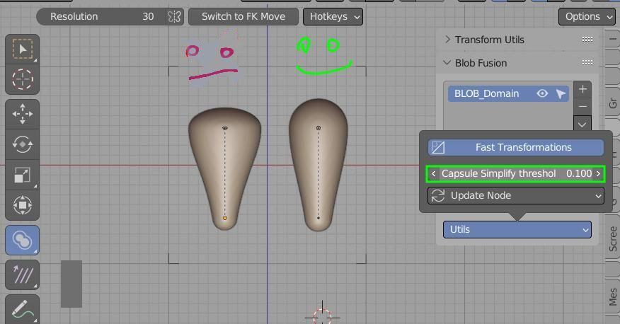

Performance¶
Two biggest factors that influence performance, when modeling with Blobs are:
- Domain resolution - lower is faster but gives less detail
- Domain size - it is best to keep the size as small/close to character as possible
There is also third factor - less obvious - uniformly scaled Empties, will give better performance, than non-uniform Blobs. Use Alt+S - to unify object Scale in X,Y and Z direction (works only when Blob Fusion Workspace tool is Active)
 Left capsule tends to be slower when calculating Signed Distance Field
Fast Transform¶
Available from Utilities popup menu.
Fast Transform will increase performance by temporarily reducing blobs resolution, when modeling blobs
Symmetry with Mirror Mod¶
To reduce Domain Size the most - instead of using Symmetry Button - you can remove left half of character, and use mirror modifier. This way only half of volume is calculated.
Removing left side of character, by dragging Domain Blob object corners verts. After that and using mirror mod navigation is smoother
Symmetry Apply¶
Apply Symmetry allows to model non symmetrical character
Note - This operation will double the Blobs count, thus editing Blobs may become slow for complicated characters!
Symmetry¶
One click solution for making the character symmetrical.
Symmetry button is located next to resolution slider